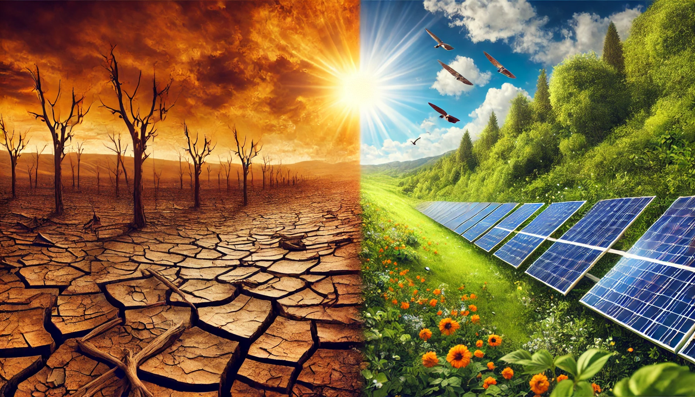
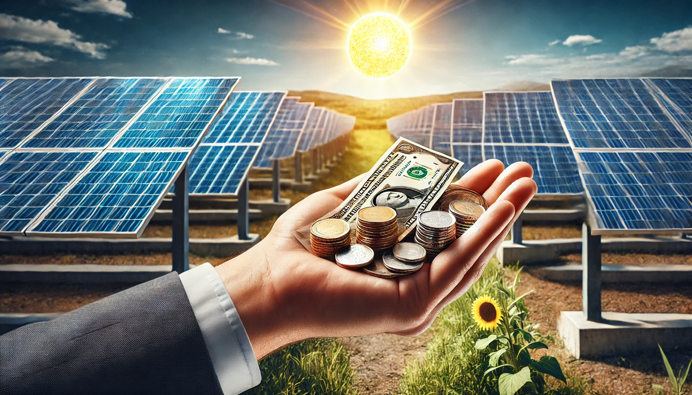
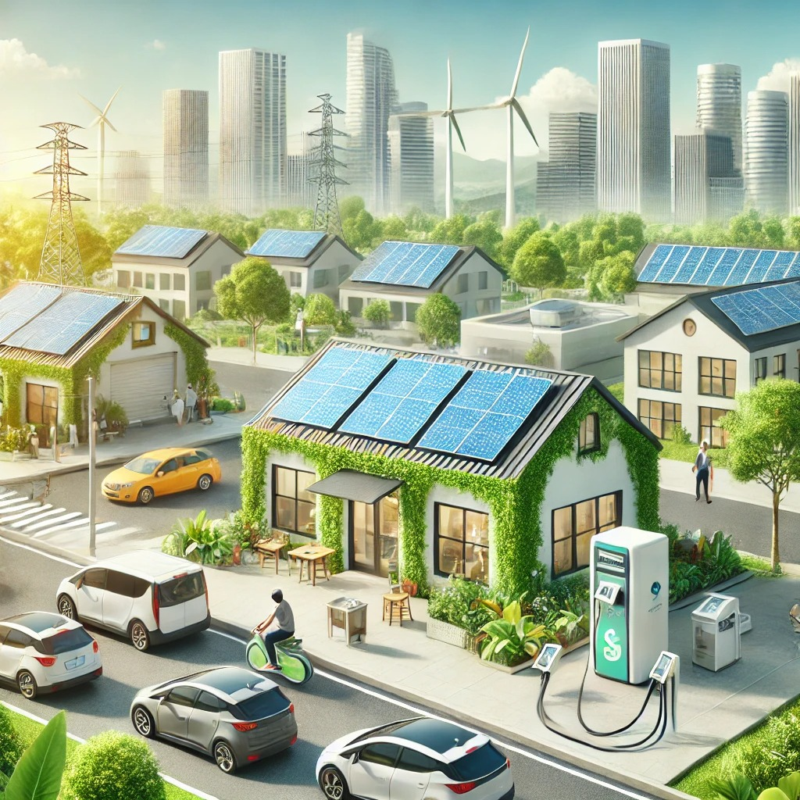
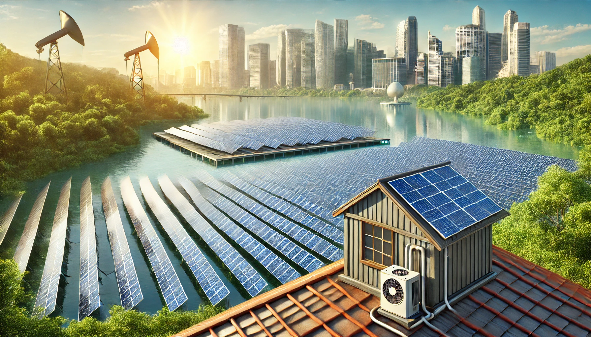
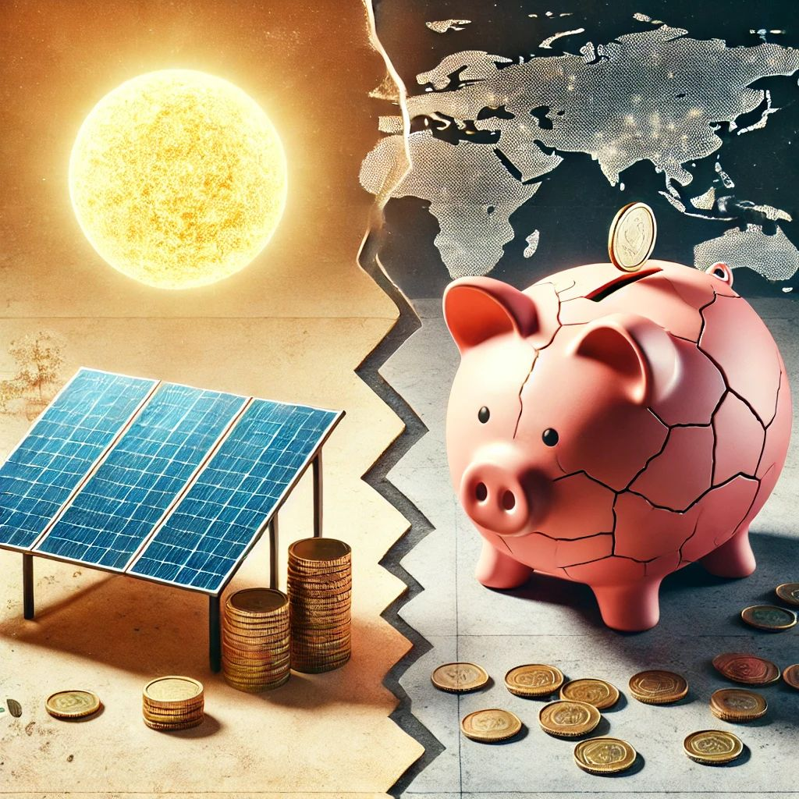

Impacto de la Energía Renovable
Descubre cómo la energía solar está transformando el mundo.
1. Impacto Ambiental Positivo
- Disminución de emisiones de carbono: El uso de energía solar no genera gases de efecto invernadero, mitigando el cambio climático.
- Conservación de recursos naturales: Menor dependencia de combustibles fósiles como carbón y petróleo.
- Minimización de la contaminación: Generación eléctrica sin contaminar aire ni agua.
2. Cambio Económico
- Aumento de oportunidades laborales: La industria solar ha generado millones de empleos a nivel mundial.
- Acceso a energía económica: La caída en precios de los paneles solares facilita su adopción.
- Autonomía energética: Menor dependencia de importaciones de combustibles fósiles.
3. Mejora en la Calidad de Vida
- Electrificación en áreas rurales: Sistemas solares suministran electricidad en regiones remotas.
- Energía en emergencias: Soluciones solares portátiles para desastres naturales.
4. Progreso en Tecnología
- Innovaciones tecnológicas: Desde paneles eficientes hasta granjas solares flotantes.
- Almacenamiento energético: Baterías avanzadas permiten usar energía solar incluso sin luz solar.
5. Influencia Global en el Cambio Energético
En 2022, la capacidad solar instalada superó los 1,000 GW, consolidándose como componente esencial del suministro energético global.
6. Retos
- Manejo de residuos: Paneles solares retirados requieren gestión adecuada.
- Intermitencia: Necesidad de tecnologías de almacenamiento para asegurar suministro estable.
- Inversión inicial: Costos iniciales aún son altos en algunos países.